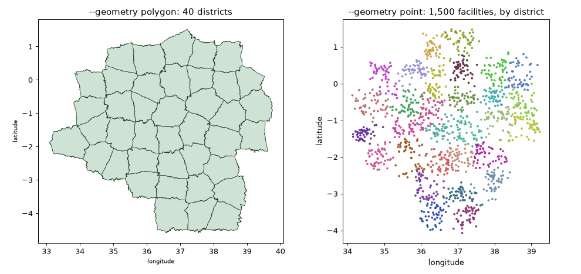

Generating your own
chap-test-data generate NAME writes one dataset of any size and shape:
uv run chap-test-data generate my-test --org-units 5000 --years 5 --period monthly
uv run chap-test-data generate districts --org-units 300 --geometry polygon --format geojson
uv run chap-test-data generate malaria --column malaria_cases --column population --column precipitation
uv run chap-test-data generate gaps --org-units 50 --covariate-gaps 5 --drop-locations 2
uv run chap-test-data generate --help
The name is the folder the dataset is written to, under datasets/ (change it with --out).
All options are optional.
For a ready-made set to start from, see Ready-made datasets.
Options
Size and time
| Option |
Default |
What it does |
--org-units N |
100 |
How many org units (districts or facilities) the dataset has. |
--period weekly or --period monthly |
weekly |
How often there is a value: once a week (periods like 2016W01) or once a month (201601). |
--years N |
10 |
How many years of data, starting in --start-year. |
--periods N |
|
How many weeks or months exactly, instead of --years. --periods 36 --period monthly is 3 years. |
--start-year YEAR |
2016 |
The year the data starts. |
Value columns
| Option |
Default |
What it does |
--columns N |
10 |
How many value columns, taken in this order: disease_cases, population, rainfall, mean_temperature, min_temperature, max_temperature, relative_humidity, soil_moisture, ndvi, elevation. Above 10 you get covariate_11, covariate_12 and so on. |
--column NAME |
|
Name the value columns yourself, one --column per column, in order. The first is the target (what models predict). Names from the list above get realistic values; other names get a seasonal covariate between 0 and 100. Replaces --columns. |
--missing SHARE |
0.002 |
Leaves some case counts empty, at random, as weeks or months with no report would be. The share is a fraction: 0.002 is about 1 value in 500, 0 leaves none empty. Chap accepts empty case counts, so these org units are still imported (a gap in a covariate is different: see --covariate-gaps). The case counts are the target, the first value column. |
Locations
| Option |
Default |
What it does |
--geometry point |
default |
Each org unit is a point, like a health facility. |
--geometry polygon |
|
Each org unit is an area, like a district, with a jagged border shared with its neighbours. |
--corners N |
800 |
How many points each area's border has, with --geometry polygon. More points draw a more detailed border and make the file larger. |
--geojson |
|
Write the locations only as locations.geojson, not as locations.parquet. Use it to test a GeoJSON upload. |
| Option |
Default |
What it does |
--format FORMAT |
|
Also write the dataset in another format; repeat for several. csv, geojson, json-columns or json-rows; see Formats. Parquet is always written. |
Settings in the file
These go into the observations file's chap.* metadata, which Chap reads as the dataset's
settings.
| Option |
Default |
What it does |
--masked START:END |
|
Hide the target between two periods, for example --masked 201801:201803, as a dataset with known bad data would. Repeat for several ranges. |
--no-metadata |
|
Write no chap.* settings. Chap then names the dataset after the file and uses its defaults. |
--spec-version VERSION |
1 |
The file format version written to the file. Chap only reads version 1, so anything else is refused. |
--about TEXT |
|
A description stored in expected.json. Without it, one is made from the settings. |
Org units Chap must reject
Chap accepts the dataset but leaves these org units out, and says which and why.
expected.json counts them as rejected.
| Option |
Default |
What it does |
--covariate-gaps N |
0 |
The first N org units each miss one value in the last value column. Chap rejects an org unit with a gap in a covariate. |
--drop-locations N |
0 |
The last N org units have data but no location in the locations file. Chap rejects an org unit it cannot place on the map. |
Files Chap must refuse
Chap refuses the whole upload with an error (HTTP 422). expected.json holds the error to expect.
| Option |
Default |
What it does |
--duplicate-rows N |
0 |
The first N rows are written twice, so an org unit has two values for the same period. |
--text-column NAME |
|
Adds a column with this name holding text instead of numbers. |
--drop-time-period |
|
Leaves out the time_period column, so Chap cannot tell when the values are from. |
--not-parquet |
|
Writes a CSV file named observations.parquet, as a wrongly saved file would be. |
Reproducing a dataset
| Option |
Default |
What it does |
--seed N |
random |
The same seed and options always give the same files. Without it a random seed is used, and expected.json records it, so you can make the same dataset again. |
--out FOLDER |
datasets |
The folder the dataset folder is written in. |
The observations are written in batches of org units, so memory stays small: 52 million rows
take about 25 s and 650 MB. The other formats are converted from the Parquet files in batches
too.
--format |
Files |
| (always) |
observations.parquet, locations.parquet, and parents.geojson: the parent areas the org units lie in |
geojson |
locations.geojson |
csv |
observations.csv (time_period, location, then the values) and locations.geojson |
json-columns |
make-dataset.columns.json: the make-dataset body with providedDataColumns, as the Modeling App sends today |
json-rows |
make-dataset.rows.json: the older body, one object per value |
The values
Values follow chapkit's TestDataGenerator, so models tested with either tool see the same
ranges:
| Column |
Values |
| population |
50,000 to 1.5 million, fixed per org unit |
| rainfall |
150 +/- 130 mm per period, following each org unit's own season |
| mean_temperature |
24 +/- 7 °C on a regional cycle; min and max 4 to 8 °C below and above |
| disease_cases |
a per-org-unit level that follows the season, plus 0.06 x rainfall |
| other covariates |
seasonal, between 0 and 100 |
The schema is Chap's, not chapkit's: periods as Chap stores them (2016W01, 201601, with real
ISO weeks, so some years have a week 53) and DHIS2-style org unit ids.
The map

- Districts (
--geometry polygon) tile a country-like map near Nairobi: no gaps, no
overlaps, and jagged borders shared by both neighbours. A border has about 800 points by
default, the median of chap-core's example boundaries, and is about 1.7 times as long as a
circle of the same area, as real borders are (1.4 to 1.9 in those files).
- Facilities (
--geometry point) cluster around a few towns in each district, always inside
it, and the parent column names that district: one per 50 facilities.
- Parents are written to
parents.geojson, so the org units can be checked against them: for
facilities the districts they lie in, for districts the regions of about 50 neighbours they
make up. Every org unit lies inside the parent its parent column names.
- Polygons follow the GeoJSON right-hand rule (RFC 7946): outer rings run counter-clockwise.